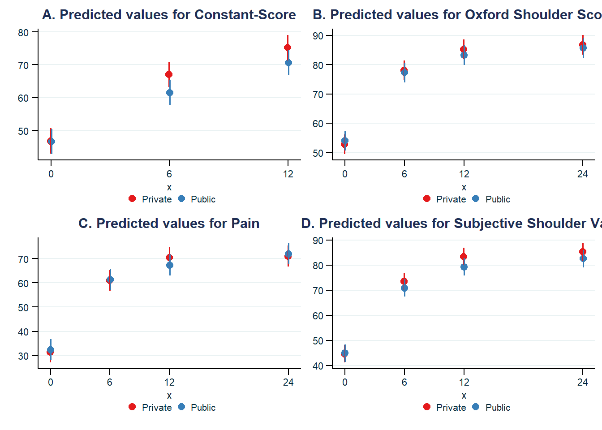

Chapter 5 Modeling 2-year outcome data
For some variables, we have missing values, while the value should remain the same (e.g. educational level), I used the package zoo to use the last observation carried forward function. This way, we have complete data useable for next steps of multilevel modelling.
library(zoo)
dataorig$education2 <- na.locf(dataorig$education2, na.rm = T)
dataorig$sgopsurgeon <- na.locf(dataorig$sgopsurgeon, na.rm = T)
dataorig$nbrearcr <- na.locf(dataorig$nbrearcr, na.rm = T)
dataorig$expyrsshoulder <- na.locf(dataorig$expyrsshoulder, na.rm = T)
dataorig$analcohol_modif <- na.locf(dataorig$analcohol_modif, na.rm = T)
dataorig$ansmoking<- na.locf(dataorig$ansmoking, na.rm = T)
dataorig$bmi <- na.locf(dataorig$bmi, na.rm = T)
dataorig$ansincew <- na.locf(dataorig$ansincew, na.rm = T)
dataorig$ansmokingyn <- na.locf(dataorig$ansmokingyn, na.rm = T)
dataorig$immrifatrepair_modif <- na.locf(dataorig$immrifatrepair_modif, na.rm = T)
dataorig$eq5d5l05_modif <- na.locf(dataorig$eq5d5l05_modif, na.rm = T)
dataorig$asa_modif <- na.locf(dataorig$asa_modif, na.rm = T)datamodel =
dataorig |>
dplyr::mutate(
ptn = as.factor(ptn),
Clinic = as.factor(Clinic.x),
pain1wo = 1 - pain1wo
) |>
dplyr::mutate_at(
c("cs", "ssv", "oss", "pain1wo"),
~ round(scales::rescale(., to = c(0,100)), digits = 0) # convert on a 0-100 scale
)5.1 Generate model objects
cs <-
lmer(
data = datamodel,
formula = cs ~ event2*hosptype.x +
Age + gender + eq5d5l05_modif + education2 + bmi + ansmokingyn + analcohol_modif + tearsev + asa_modif +
(1 | Clinic/ptn))
cs_model <- cs |> report_table() |> as.data.frame()
oss <-
lmer(
data = datamodel,
formula = oss ~ event2*hosptype.x +
Age + gender + eq5d5l05_modif + education2 + bmi + ansmokingyn + analcohol_modif + tearsev + asa_modif +
(1 | Clinic/ptn))
oss_model <- oss |> report_table() |> as.data.frame()
pain1wo <-
lmer(
data = datamodel,
formula = pain1wo ~ event2*hosptype.x +
Age + gender + eq5d5l05_modif + education2 + bmi + ansmokingyn + analcohol_modif + tearsev + asa_modif +
(1 | Clinic/ptn))
pain1wo_model <- pain1wo |> report_table() |> as.data.frame()
ssv <-
lmer(
data = datamodel,
formula = ssv ~ event2*hosptype.x +
Age + gender + eq5d5l05_modif + education2 + bmi + ansmokingyn + analcohol_modif + tearsev + asa_modif +
(1 | Clinic/ptn))
ssv_model <- ssv |> report_table() |> as.data.frame()cs_model2 <-
cs_model |>
dplyr::select(
Parameter,
Coefficient,
CI_low,
CI_high,
Group,
Fit
) |>
dplyr::mutate(
across(c(Coefficient, CI_low, CI_high),
~ round(.x, digits = 1)),
across(c(Fit),
~ round(.x, digits = 2))
) |>
dplyr::mutate(
Parameter =
dplyr::case_when(
is.na(Parameter) ~ Group,
TRUE ~ as.character(Parameter)
),
Coefficient =
dplyr::case_when(
is.na(Coefficient) ~ Fit,
TRUE ~ Coefficient
)
) |>
dplyr::select(
-Group,
-Fit
) |>
tidyr::unite("Constant-Score", c(Coefficient, CI_low), sep = " (", na.rm = T) |>
tidyr::unite("Constant-Score", c(`Constant-Score`, CI_high), sep = " to ", na.rm = T)|>
dplyr::mutate(
`Constant-Score` =
dplyr::case_when(
str_detect(as.character(`Constant-Score`), "to") ~ paste0(`Constant-Score`, ")"),
TRUE ~ as.character(`Constant-Score`)
)
)
oss_model2 <-
oss_model |>
dplyr::select(
Parameter,
Coefficient,
CI_low,
CI_high,
Group,
Fit
) |>
dplyr::mutate(
across(c(Coefficient, CI_low, CI_high),
~ round(.x, digits = 1)),
across(c(Fit),
~ round(.x, digits = 2))
) |>
dplyr::mutate(
Parameter =
dplyr::case_when(
is.na(Parameter) ~ Group,
TRUE ~ as.character(Parameter)
),
Coefficient =
dplyr::case_when(
is.na(Coefficient) ~ Fit,
TRUE ~ Coefficient
)
) |>
dplyr::select(
-Group,
-Fit
) |>
tidyr::unite("Oxford Shoulder Score", c(Coefficient, CI_low), sep = " (", na.rm = T) |>
tidyr::unite("Oxford Shoulder Score", c(`Oxford Shoulder Score`, CI_high), sep = " to ", na.rm = T)|>
dplyr::mutate(
`Oxford Shoulder Score` =
dplyr::case_when(
str_detect(as.character(`Oxford Shoulder Score`), "to") ~ paste0(`Oxford Shoulder Score`, ")"),
TRUE ~ as.character(`Oxford Shoulder Score`)
)
)
pain1wo_model2 <-
pain1wo_model |>
dplyr::select(
Parameter,
Coefficient,
CI_low,
CI_high,
Group,
Fit
) |>
dplyr::mutate(
across(c(Coefficient, CI_low, CI_high),
~ round(.x, digits = 1)),
across(c(Fit),
~ round(.x, digits = 2))
) |>
dplyr::mutate(
Parameter =
dplyr::case_when(
is.na(Parameter) ~ Group,
TRUE ~ as.character(Parameter)
),
Coefficient =
dplyr::case_when(
is.na(Coefficient) ~ Fit,
TRUE ~ Coefficient
)
) |>
dplyr::select(
-Group,
-Fit
) |>
tidyr::unite("Pain", c(Coefficient, CI_low), sep = " (", na.rm = T) |>
tidyr::unite("Pain", c(`Pain`, CI_high), sep = " to ", na.rm = T)|>
dplyr::mutate(
`Pain` =
dplyr::case_when(
str_detect(as.character(`Pain`), "to") ~ paste0(`Pain`, ")"),
TRUE ~ as.character(`Pain`)
)
)
ssv_model2 <-
ssv_model |>
dplyr::select(
Parameter,
Coefficient,
CI_low,
CI_high,
Group,
Fit
) |>
dplyr::mutate(
across(c(Coefficient, CI_low, CI_high),
~ round(.x, digits = 1)),
across(c(Fit),
~ round(.x, digits = 2))
) |>
dplyr::mutate(
Parameter =
dplyr::case_when(
is.na(Parameter) ~ Group,
TRUE ~ as.character(Parameter)
),
Coefficient =
dplyr::case_when(
is.na(Coefficient) ~ Fit,
TRUE ~ Coefficient
)
) |>
dplyr::select(
-Group,
-Fit
) |>
tidyr::unite("Subjective Shoulder Value", c(Coefficient, CI_low), sep = " (", na.rm = T) |>
tidyr::unite("Subjective Shoulder Value", c(`Subjective Shoulder Value`, CI_high), sep = " to ", na.rm = T)|>
dplyr::mutate(
`Subjective Shoulder Value` =
dplyr::case_when(
str_detect(as.character(`Subjective Shoulder Value`), "to") ~ paste0(`Subjective Shoulder Value`, ")"),
TRUE ~ as.character(`Subjective Shoulder Value`)
)
)5.2 Report model
table_mv <-
right_join(
cs_model2,
oss_model2,
by = join_by(Parameter))
table_mv <- right_join(
table_mv,
pain1wo_model2,
by = join_by(Parameter)
)
table_mv <- right_join(
table_mv,
ssv_model2,
by = join_by(Parameter)
)table_mv |>
dplyr::filter(
! Parameter %in% c("AIC", "AICc", "BIC", "Sigma"),
!is.na(Parameter)
) |>
dplyr::mutate(rn = row_number())## Parameter Constant-Score Oxford Shoulder Score
## 1 (Intercept) 61.2 (53.7 to 68.6) 54.1 (47.4 to 60.8)
## 2 event2 [6] 20.3 (18.8 to 21.8) 25.2 (23.8 to 26.6)
## 3 event2 [12] 28.5 (26.9 to 30) 32.5 (31.1 to 33.9)
## 4 hosptype x [Public] -0.1 (-3.5 to 3.2) 1.2 (-1.5 to 3.9)
## 5 Age -0.1 (-0.2 to -0.1) 0.1 (0 to 0.2)
## 6 gender [Male] 3.2 (1.7 to 4.8) 2.1 (0.7 to 3.5)
## 7 eq5d5l05 modif [I am slightly anxious or depressed] -5.4 (-6.9 to -3.9) -7.5 (-8.7 to -6.3)
## 8 eq5d5l05 modif [At least moderately anxious or depressed] -11.3 (-13.5 to -9.2) -17 (-18.8 to -15.2)
## 9 education2 [10 to 13 years of education] 4.4 (2.2 to 6.6) 5.3 (3.3 to 7.3)
## 10 education2 [13+ years of education] 7.2 (4.9 to 9.6) 8 (5.8 to 10.1)
## 11 bmi -0.2 (-0.4 to -0.1) -0.2 (-0.4 to -0.1)
## 12 ansmokingyn [Yes] -2.6 (-4.4 to -0.8) -1.5 (-3.1 to 0.2)
## 13 analcohol modif [Occasionally] 2.5 (0.7 to 4.2) 1.3 (-0.4 to 2.9)
## 14 analcohol modif [At least daily] 0.1 (-2.7 to 2.9) -0.5 (-3 to 2)
## 15 tearsev [Single full tear] -0.9 (-3.2 to 1.4) 1.4 (-0.7 to 3.5)
## 16 tearsev [Two or three tendons (only one full)] -1.6 (-4.2 to 1.1) 0.2 (-2.2 to 2.6)
## 17 tearsev [Massive tear (Gerber et al)] -2.3 (-4.5 to -0.1) 0.7 (-1.3 to 2.7)
## 18 asa modif [II] 0.3 (-1.3 to 2) -0.7 (-2.2 to 0.7)
## 19 asa modif [III-IV] -3 (-6.1 to 0.1) -3 (-5.8 to -0.2)
## 20 event2 [6] * hosptype x [Public] -5.4 (-7.7 to -3.2) -2 (-4 to 0.1)
## 21 event2 [12] * hosptype x [Public] -4.4 (-6.7 to -2.2) -3.3 (-5.4 to -1.2)
## 22 ptn:Clinic 8.1 8.1
## 23 Clinic 2.8 2.1
## 24 Residual 12.2 11.2
## 25 R2 (conditional) 0.63 0.72
## 26 R2 (marginal) 0.45 0.56
## 27 event2 [24] <NA> 34 (32.6 to 35.4)
## 28 event2 [24] * hosptype x [Public] <NA> -2.3 (-4.4 to -0.2)
## Pain Subjective Shoulder Value rn
## 1 27.9 (18.9 to 36.8) 40.9 (33.8 to 47.9) 1
## 2 29.5 (27.5 to 31.6) 29 (27.2 to 30.7) 2
## 3 39.1 (36.9 to 41.2) 38.8 (37.1 to 40.6) 3
## 4 1 (-2 to 4) 0.3 (-2.4 to 2.9) 4
## 5 0.2 (0.1 to 0.3) 0.1 (0 to 0.2) 5
## 6 3.1 (1.2 to 4.9) -1.3 (-2.8 to 0.1) 6
## 7 -8.8 (-10.6 to -6.9) -7.4 (-8.9 to -5.9) 7
## 8 -16.3 (-18.9 to -13.6) -14.8 (-17 to -12.7) 8
## 9 9.2 (6.4 to 11.9) 4.4 (2.2 to 6.5) 9
## 10 12.2 (9.2 to 15.1) 7.4 (5.2 to 9.7) 10
## 11 -0.2 (-0.5 to 0) -0.1 (-0.3 to 0.1) 11
## 12 -2.1 (-4.3 to 0.1) -1.2 (-2.9 to 0.5) 12
## 13 1.6 (-0.5 to 3.8) 0.9 (-0.8 to 2.5) 13
## 14 0 (-3.4 to 3.4) -0.2 (-2.9 to 2.4) 14
## 15 4.4 (1.5 to 7.2) 1.8 (-0.4 to 4) 15
## 16 2.8 (-0.4 to 6.1) 0.9 (-1.7 to 3.4) 16
## 17 4.8 (2.1 to 7.5) 2.1 (0 to 4.2) 17
## 18 -1.3 (-3.2 to 0.7) -0.2 (-1.8 to 1.3) 18
## 19 -2.3 (-6.1 to 1.5) -1.8 (-4.7 to 1.2) 19
## 20 -0.6 (-3.7 to 2.5) -2.9 (-5.5 to -0.4) 20
## 21 -4.2 (-7.3 to -1) -4.4 (-7 to -1.8) 21
## 22 10.4 7.6 22
## 23 1.5 1.6 23
## 24 16.9 14 24
## 25 0.62 0.66 25
## 26 0.48 0.55 26
## 27 39.6 (37.5 to 41.7) 40.7 (38.9 to 42.4) 27
## 28 -0.1 (-3.3 to 3) -2.9 (-5.5 to -0.3) 28new_order = c(1,2,3,27,4,20,21,28,5,6,11,12,13,14,18,19,7,8,9,10,15,16,17,22:26)
table_mv |>
dplyr::filter(
! Parameter %in% c("AIC", "AICc", "BIC", "Sigma"),
!is.na(Parameter)
) |>
dplyr::slice(new_order) |>
dplyr::mutate(
Parameter =
recode(
Parameter,
`event2 [6]` = "6-month score",
`event2 [12]` = "12-month score",
`event2 [24]` = "24-month score",
`hosptype x [Public]` = "Public",
`event2 [6] Ã hosptype x [Public]` = "Interaction 6-month score x Public",
`event2 [12] Ã hosptype x [Public]` = "Interaction 12-month score x Public",
`event2 [24] Ã hosptype x [Public]` = "Interaction 24-month score x Public",
`Age` = "Age (year-unit)",
`gender [Male]` = "Male",
`bmi` = "Body mass index (kg/m2-unit)",
`ansmokingyn [Yes]` = "Current smoker",
`analcohol modif [Occasionally]` = "Occasionally",
`analcohol modif [At least daily]` = "At least daily",
`asa modif [II]` = "II",
`asa modif [III-IV]` = "III-IV",
`eq5d5l05 modif [I am slightly anxious or depressed]` = "Slightly anxious or depressed",
`eq5d5l05 modif [At least moderately anxious or depressed]` = "At least moderately anxious or depressed",
`education2 [10 to 13 years of education]` = "10 to 13 years of education",
`education2 [13+ years of education]` = "13+ years of education",
`tearsev [Single full tear]` = "Single full tear",
`tearsev [Two or three tendons (only one full)]` = "Two or three tendons (only one full)",
`tearsev [Massive tear (Gerber et al)]` = "Massive tear (Gerber et al)",
`ptn:Clinic` = "Patient-level variation",
`Clinic` = "Clinic-level variation",
`Residual` = "Residual variation",
)
) |>
add_row(
Parameter = "Private",
`Constant-Score` = "Ref.",
`Oxford Shoulder Score` = "Ref.",
`Pain` = "Ref.",
`Subjective Shoulder Value` = "Ref.",
.before = 5
) |>
add_row(
Parameter = "Female",
`Constant-Score` = "Ref.",
`Oxford Shoulder Score` = "Ref.",
`Pain` = "Ref.",
`Subjective Shoulder Value` = "Ref.",
.before = 11
) |>
add_row(
Parameter = "Not current smoker",
`Constant-Score` = "Ref.",
`Oxford Shoulder Score` = "Ref.",
`Pain` = "Ref.",
`Subjective Shoulder Value` = "Ref.",
.before = 14
) |>
add_row(
Parameter = "No",
`Constant-Score` = "Ref.",
`Oxford Shoulder Score` = "Ref.",
`Pain` = "Ref.",
`Subjective Shoulder Value` = "Ref.",
.before = 16
)|>
add_row(
Parameter = "I",
`Constant-Score` = "Ref.",
`Oxford Shoulder Score` = "Ref.",
`Pain` = "Ref.",
`Subjective Shoulder Value` = "Ref.",
.before = 19
)|>
add_row(
Parameter = "Not anxious or depressed",
`Constant-Score` = "Ref.",
`Oxford Shoulder Score` = "Ref.",
`Pain` = "Ref.",
`Subjective Shoulder Value` = "Ref.",
.before = 22
)|>
add_row(
Parameter = "Up to 9 years of education",
`Constant-Score` = "Ref.",
`Oxford Shoulder Score` = "Ref.",
`Pain` = "Ref.",
`Subjective Shoulder Value` = "Ref.",
.before = 25
)|>
add_row(
Parameter = "Partial tear",
`Constant-Score` = "Ref.",
`Oxford Shoulder Score` = "Ref.",
`Pain` = "Ref.",
`Subjective Shoulder Value` = "Ref.",
.before = 28
) |> writexl::write_xlsx("tables/multilevel-modelling.xlsx")5.4 Forest plot
5.4.1 sjPlot
## Install package "strengejacke" from GitHub (`devtools::install_github("strengejacke/strengejacke")`) to load all sj-packages at once!##
## Attache Paket: 'sjmisc'## Das folgende Objekt ist maskiert 'package:purrr':
##
## is_empty## Das folgende Objekt ist maskiert 'package:tidyr':
##
## replace_na## Das folgende Objekt ist maskiert 'package:tibble':
##
## add_case5.4.2 Customize theme
my_cols5 <- c("#2A6EBB", "#F0AB00", "#CD202C", "#7D5CC6", "#69BE28")
font_col <- c("#04293C")
mytheme2 <-
ggthemes::theme_stata(base_size = 9,
base_family = "Arial") +
theme(plot.background = element_rect(fill = "white"),
legend.title = element_blank(),
legend.text = element_text(size = 8,
color = "#04293C"),
legend.background = element_blank(),
legend.margin = margin(5, 0, 0, 0, unit = "pt"),
legend.box.margin = margin(-15, 0, 10, 0, unit = "pt"),
legend.box.background = element_blank(),
legend.key.size = unit(4, "pt"),
legend.box = "vertical",
plot.title = element_text(face ="bold"),
plot.subtitle = element_text(color = "#04293C"),
plot.margin = unit(c(2, 0, 0, 2), "pt"),
axis.title.y = element_text(color = "#04293C",
angle = 90,
vjust = 0.5,
margin = margin(0, 0, 0, 0, unit = "pt")),
axis.title.x = element_text(color = "#04293C"),
axis.text.y = element_text(color = "#04293C",
angle = 0),
axis.text.x = element_text(color = "#04293C"))5.4.3 Generate plot object using sjPlot
plot =
plot_models(
cs,
oss,
pain1wo,
ssv,
#std.est = "std2",
rm.terms = c( # remove terms
"bmi",
"Age",
"gender [Male]",
"eq5d5l05_modif [I am slightly anxious or depressed, At least moderately anxious or depressed]",
"education2 [10 to 13 years of education, 13+ years of education]",
"ansmokingyn [Yes]",
"analcohol_modif [Occasionally, At least daily]",
"tearsev [Single full tear, Two or three tendons (only one full), Massive tear (Gerber et al)]",
"asa_modif [II, III-IV]"),
show.values = T,
vline.color = "black",
value.size = 3,
show.legend = T,
dot.size = 3
)5.4.4 Selecting plot objects and plot config
plot$data =
transform(plot$data,
term = factor(term,
levels =
c(
"event224:hosptype.xPublic",
"event212:hosptype.xPublic",
"event26:hosptype.xPublic",
"hosptype.xPublic",
"event224",
"event212",
"event26",
"(Intercept)"
),
labels =
c(
"24-month x Public",
"12-month x Public",
"6-month x Public",
"Public hospital (vs. Private)",
"24-month",
"12-month",
"6-month",
"Baseline (intercept)"
)),
group = factor(group,
levels =
c("ssv",
"pain1wo",
"oss",
"cs"
),
labels =
c("Subjective Shoulder Value",
"Pain",
"Oxford Shoulder Score",
"Constant-Score"
)
)
)
dodge <- (0.7)
plot$layers[[1]]$aes_params$size <- 1
plot$layers[[2]]$position <- position_dodge(dodge)
plot$layers[[3]]$position <- position_dodge(dodge)
plot$layers[[4]]$position <- position_dodge(dodge)
plot$layers[[4]]$aes_params$hjust <- -1.1
plot$layers[[4]]$aes_params$vjust <- 0.2
plot2 <-
plot + mytheme2 +
scale_color_manual(
values = c("#7D5CC6", "#CD202C", "#F0AB00", "#2A6EBB")
) +
labs(
y = "Regression coefficient"
)## Scale for colour is already present.
## Adding another scale for colour, which will replace the existing scale.
5.5 Prediction plot
plot_cs =
plot_model(
cs,
type = "int",
title = "A. Predicted values for Constant-Score",
axis.title = c("x", "")
) +
mytheme2plot_oss =
plot_model(
oss,
type = "int",
title = "B. Predicted values for Oxford Shoulder Score",
axis.title = c("x", "")
) +
mytheme2plot_pain1wo =
plot_model(
pain1wo,
type = "int",
title = "C. Predicted values for Pain",
axis.title = c("x", "")
) +
mytheme2plot_ssv =
plot_model(
ssv,
type = "int",
title = "D. Predicted values for Subjective Shoulder Value",
axis.title = c("x", "")
) +
mytheme2
## used (Mb) gc trigger (Mb) max used (Mb)
## Ncells 3875741 207.0 6054084 323.4 6054084 323.4
## Vcells 9201064 70.2 140235187 1070.0 218669467 1668.4
Audigé, Laurent, Heiner C C Bucher, Soheila Aghlmandi, Thomas Stojanov, David Schwappach, Sabina Hunziker, Christian Candrian, et al. 2021. âSwiss-Wide Multicentre Evaluation and Prediction of Core Outcomes in Arthroscopic Rotator Cuff Repair: Protocol for the ARCR_pred Cohort Study.â BMJ Open 11 (4). https://doi.org/10.1136/bmjopen-2020-045702.